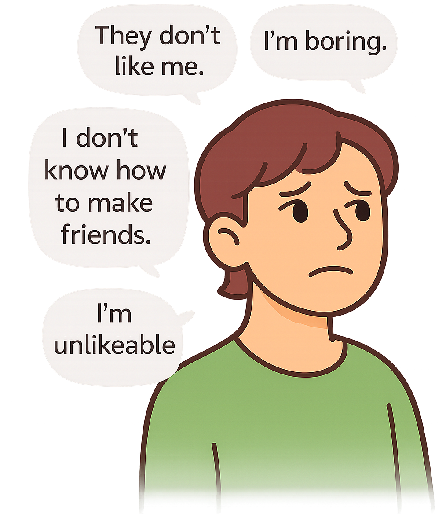
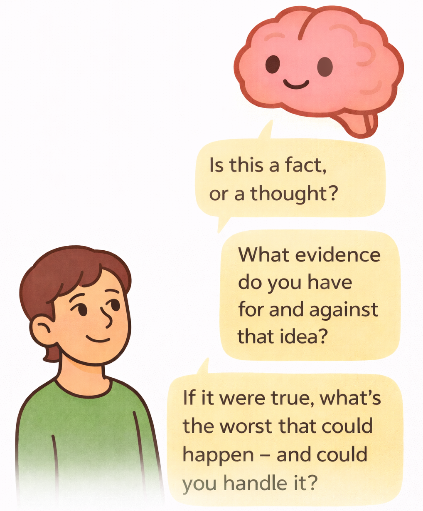
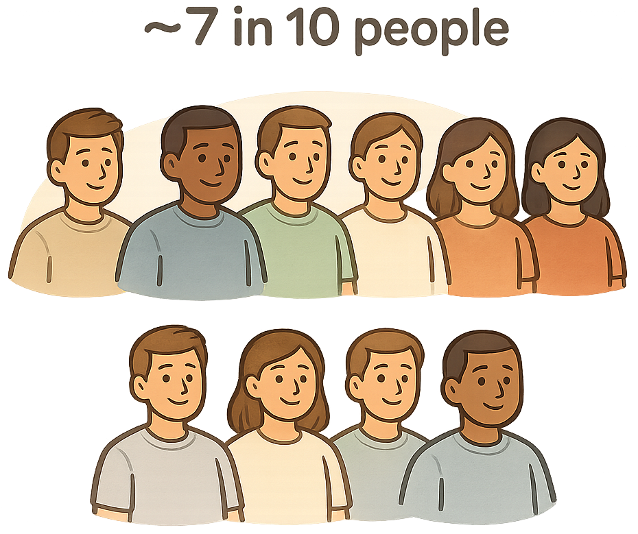
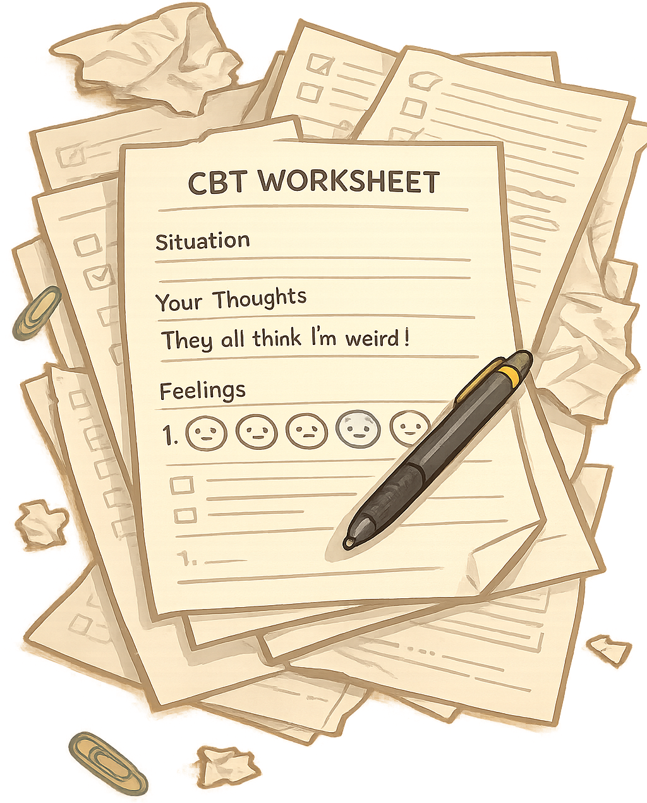

1. Describe the situation

Tell APAL what happened and what’s on your mind.
Science-proven cognitive methods that reduce social anxiety - at the reach of your pocket.


See how APAL helps in the moment
Curious how APAL challenges anxious thoughts?
See how APAL worksFeeling anxious? Whether something is about to happen, is happening now, or already happened, APAL helps you work through it in 3 simple steps.
Tell APAL what happened and what’s on your mind.

Use guided CBT questions to review it.

Set a goal and build confidence over time.
* for free

~7 in 10 people who use CBT techniques report meaningful improvement in anxiety.
Most CBT worksheets are printed, easy to lose, or hard to use in the moment… which is when many social situations actually happen.

Instead of filling out worksheets by hand, you can use APAL to work through anxious thoughts, save your entries, and track progress over time.

APAL gives you tools you can use before, during, and after any anxious moment.
Choose a moment to explore:
Try it for yourself
Start using tools designed for before, during, and after anxious situations.
Get started - freeHey, I’m Juan :) I built APAL after CBT helped me deal with social anxiety. While practicing it, I noticed many CBT resources were hard to use digitally or required printing worksheets.
So I partnered with my psychologist to bring this tool to you.
A space where people can share experiences, ask questions, and support each other while using APAL.
Yes. The core features of APAL are free to use. We’re currently building a premium version with additional features, which will be tested with a small group of early users.
You’ll still be able to use APAL for free. The premium version is optional.
APAL helps you handle social anxiety using simple CBT-based tools.
You can use it to talk through anxious moments, complete short exercises, reflect on past events, and track your progress over time.
APAL is for anyone dealing with social anxiety or wanting to better understand their thoughts and reactions in social situations.
You can use APAL before, during, or after a situation that feels stressful.
It helps you prepare, reflect on what happened, and stay consistent with your progress.
Most CBT tools rely on static worksheets or are not designed for social anxiety.
APAL guides you through exercises in a simpler, chat-like way, so it’s easier to reflect, stay consistent, and improve social anxiety over time.
No. You can use it whenever you need it. Some people use it daily, while others only use it during specific situations. Both work.
No. You can use APAL with or without a therapist.
CBT usually works faster when a professional is involved, but many people still benefit from doing the exercises on their own.
No. APAL is not a replacement for therapy.
It is meant to support your CBT journey, keep everything in one place, and make it easier to reflect between sessions.
If you don’t have access to therapy, APAL can still help you build useful habits and reduce avoidance, just at a slower pace than working with a clinician.
Yes. APAL was designed with therapy in mind.
You can share your entries, reflections, and progress with your therapist so you both have a clearer picture of your week.
If your therapist has suggestions or wants to know more, they can reach out to us anytime. We’re very open to feedback from professionals, since it helps us make APAL better for everyone.
Yes. Your entries and reflections are private and secure. We don’t share your data, and you stay in control of what you write.
Contact us here or send a message through the form: